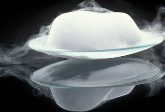

Thăng hoa

Image source: Topic 2 image sources
| Vietnamese | Thăng hoa |
|---|---|
| English | Sublimation (noun) / Sublime (verb) |
| Pronunciation | /ˌsʌblɪˈmeɪʃn/ or /ˌsʌblɪˈmeɪʃən/ |
| Word type | Danh từ / Động từ |
Meaning (Vietnamese)
Quá trình biến đổi trực tiếp từ thể rắn sang thể hơi mà không qua thể lỏng.
Meaning (English)
The process in which a substance changes directly from a solid to a gas without passing through liquid.
Example
Sublimation can separate naphthalene from non- volatile impurities.
Another definition from the notes
Sự chuyển trực tiếp từ thể rắn sang thể khí mà không qua thể lỏng.
The direct change of a solid into a gas without passing through the liquid state.
Source of information: Topic 2 notes (see Sources)